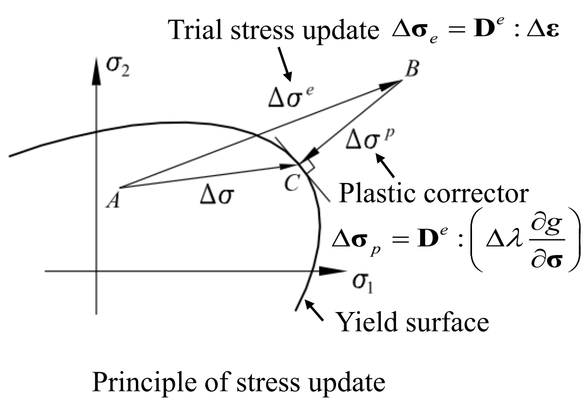
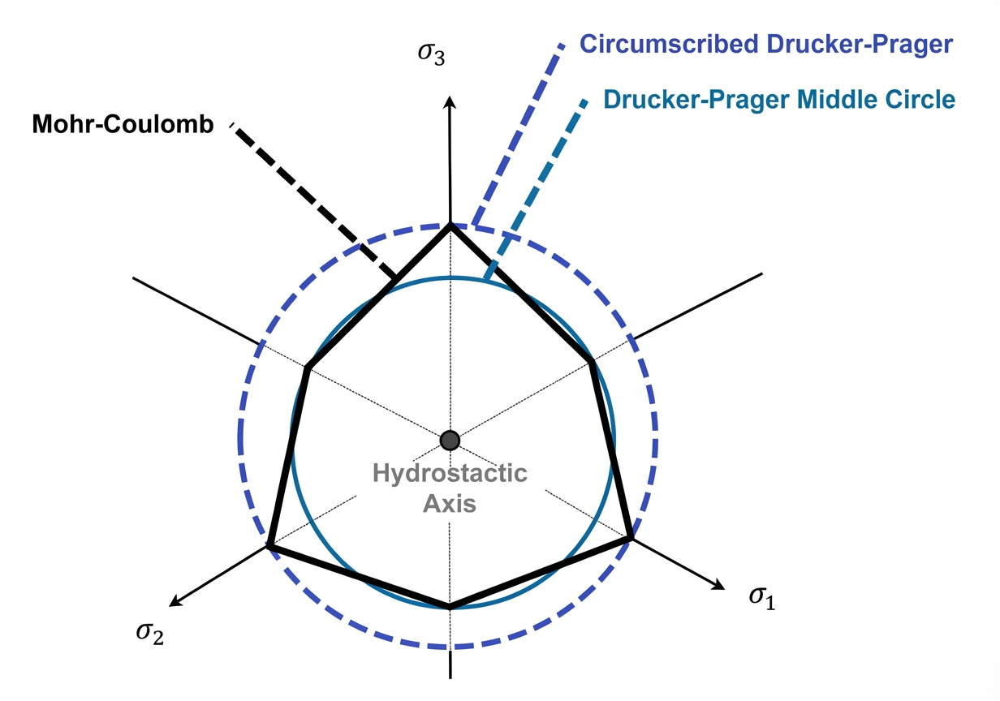
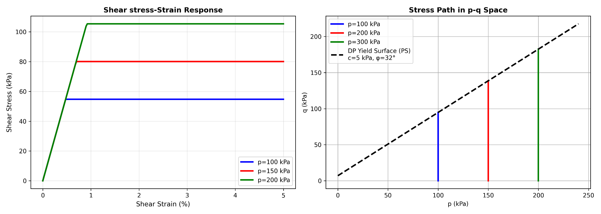
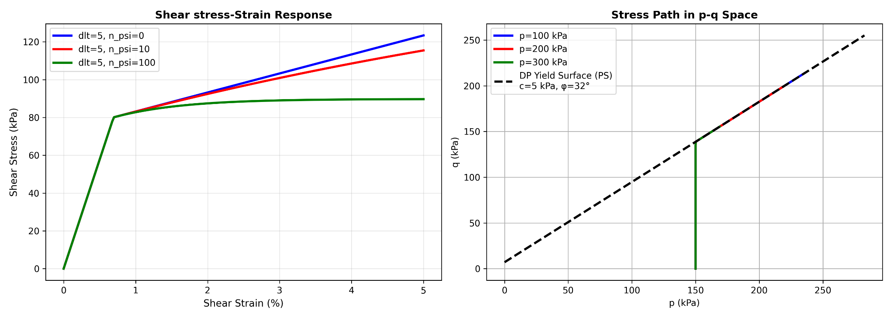
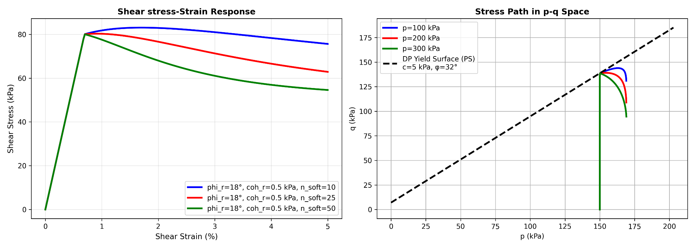
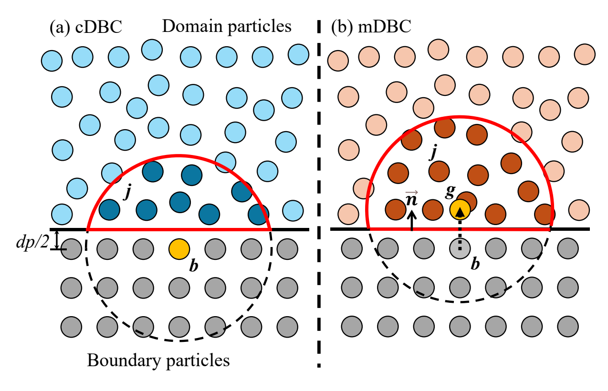
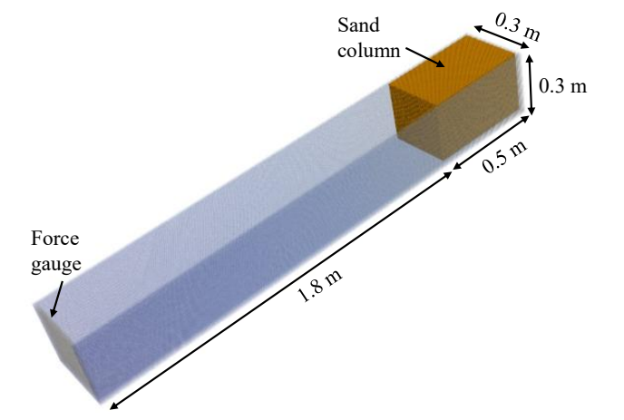
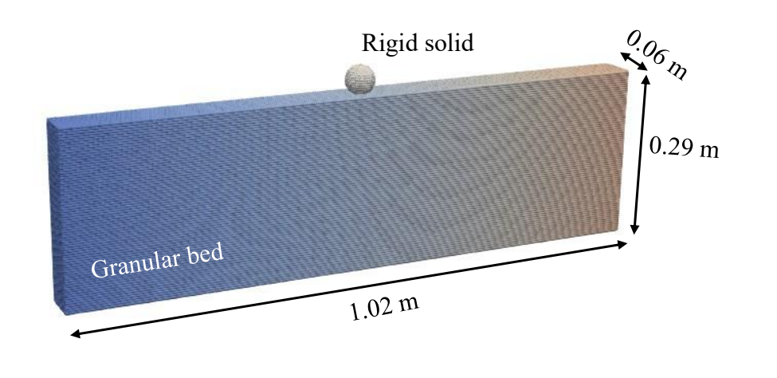

Geomechanics¶
Under review by Ruofeng Feng
Continuum modelling of geomaterials, Drucker–Prager plasticity, boundary reconstruction and interactions with rigid bodies.
Scope and implementation context¶
GeoDualSPHysics describes large deformations of geomaterials through a single-phase continuum formulation. Soil, rock, clay and aggregates consist of grains, but the model represents the bulk behaviour of a representative volume element rather than resolving individual grain contacts. Internal friction, cohesion and dilation govern the material response at this continuum scale.
The XML Guide dated December 2025 and Ruofeng Feng's January 2026 workshop presentation describe an implementation in the specialised DualSPHysics v5.2 Geomechanics module. The material model follows elastic-plastic theory with a Drucker–Prager yield criterion, a non-associated flow rule and optional evolution of strength and dilatancy. The workshop adds the governing equations and boundary reconstruction.
The XML on this page retains that module's documented configuration. Its applicability to the principal DualSPHysics v6 solver has not been established. Module-specific meanings must be preserved when interpreting historical examples: notably, Boundary=1 denotes cDBC, and DensityDT controls stress diffusion in this formulation. A similarly named fluid-solver option does not establish numerical equivalence.
This Geomechanics formulation is distinct from TL-SPH Flexible Structures, the ChronoFEA structural coupling and multiphase non-Newtonian rheology. They use different constitutive descriptions and configuration interfaces. Coupling geomaterials to rigid bodies through Chrono does not turn the geomaterial into a finite-element structure.
Continuum and SPH formulation¶
Conservation and kinematics¶
The workshop expresses conservation of mass and momentum as
Here \(\rho\) is density, \(\mathbf{v}\) is velocity, \(\boldsymbol\sigma\) is the stress tensor and \(\mathbf{b}\) is body acceleration. The stress tensor enters through its divergence; it is not replaced by a scalar fluid-pressure constitutive law.
The symmetric and antisymmetric parts of the velocity gradient give the strain and spin rates:
These rates describe deformation and local rotation. A constitutive model supplies the stress–strain relationship. The source does not specify a complete objective stress-rate algorithm or every integration detail through these kinematic equations alone.
Particle discretisation¶
For particles \(i\) and \(j\), with mass \(m_j\), kernel \(W_{ij}\) and Cartesian components \(\alpha\) and \(\beta\), the documented SPH equations are
The body-acceleration component is written \(g^\alpha\) in this particle equation. The stress terms and density weighting follow the stated module formulation. The velocity-gradient approximations give
The sums extend over the \(N\) neighbours in the source notation; repeated Cartesian component indices are contracted where applicable. These are the displayed spatial approximations, rather than a complete specification of stress integration, kernel correction, tensile-failure treatment or boundary closure.
The supplied examples retain their original time-integration selections. The cylindrical-collapse case uses numerical StepAlgorithm=1 and the other seven inputs use 2, labelled Verlet and Symplectic respectively in those module files. This records their configuration without claiming that either selection has been verified with a different solver release.
Elastic-plastic constitutive behaviour¶
Yield function and plastic potential¶
The documented model uses a Drucker–Prager yield function \(f\) and a separate plastic potential \(g\):
\(I_1\) is the first stress invariant and \(J_2\) is the second deviatoric stress invariant. The constants \(\alpha_\varphi\) and \(k_c\) depend on friction angle and cohesion, while \(\alpha_\psi\) depends on dilation angle. The yield function determines the onset of plastic deformation; the plastic potential determines the deformation direction after yielding. Their separate parameter dependence expresses the non-associated flow rule.
The workshop illustrates an elastic trial increment followed by a plastic corrector:
\(\mathbf{D}^{e}\) denotes the elastic constitutive tensor and \(\Delta\lambda\) is the plastic multiplier. The figure distinguishes the trial state, corrected state and yield surface.

This diagram explains the stress-update principle. It does not define a particular return-mapping iteration, convergence tolerance or additional failure criterion. No such numerical settings should be inferred from the illustration.
Drucker–Prager calibration and DPCtes¶
The source compares the Drucker–Prager surface with the Mohr–Coulomb shear-strength relation
Here \(c\) is cohesion and \(\varphi'\) is the friction angle in the source notation. This comparison does not establish a separately selectable Mohr–Coulomb constitutive model.

DPCtes belongs to case/execution/parameters. The documented module offers three constant sets.
DPCtes |
Description in the module reference | Dimensional context |
|---|---|---|
| 1 | Circumscribed Drucker–Prager surface | Three-dimensional Mohr–Coulomb comparison |
| 2 | Middle-circumscribed Drucker–Prager surface | Three-dimensional Mohr–Coulomb comparison |
| 3 | Plane-strain version | Two-dimensional formulation |
For option 1, the workshop gives
For option 2, it gives
For option 3, it gives
These alternatives change the relationship between the frictional material parameters and the yield/potential constants. They are not interchangeable labels for the same fitted surface. The module reference documents option 1 as its default; the worked reference and most supplied examples explicitly select 2.
XML excerpt — yield-selection. Documented Geomechanics module context. XML location: case/execution/parameters. Source: examples/geomech/01_CylindricalGranularCollapse/CaseGranularCollapse3D_Def.xml. Retain the surrounding case definitions and settings.
<parameter key="DPCtes" value="2" comment="DP constants type 1:3D DP circumscribed, 2:3D mid circumscribes, 3:2D Plane strain (default=1)" />
Elastic-perfectly plastic response¶
The basic model combines elastic stiffness with pressure-dependent yielding. Young's modulus and Poisson's ratio govern the elastic response; cohesion and friction angle define strength. The non-dilatant, perfectly plastic comparison develops plastic deformation after reaching the yield condition without plastic volume change.

The left panel illustrates increasing shear resistance at higher confining pressures. The source's pressure–deviatoric-stress panels contain legend values that do not consistently match the plotted pressure coordinates. They retain their published labels and should not be used to infer additional quantitative confining-pressure cases.
The absence of plastic volume change belongs to the non-dilatant comparison. It is not a general restriction on the optional dilation and contraction configurations described below.
Material properties and their XML hierarchy¶
Basic properties¶
Material properties belong to case/execution/special/geomech. The documented single-phase configuration defines one set of geomaterial properties here; it does not use the nnphases/phase hierarchy of the non-Newtonian module.
| Element | Physical quantity | Units in the dedicated reference |
|---|---|---|
ModulusE |
Young's modulus | Pa |
PRvs |
Poisson's ratio | Dimensionless |
phi |
Internal friction angle | Degrees |
coh |
Cohesion | Pa |
Density is specified separately through case/casedef/constantsdef/rhop0 in the supplied cases. It is not a geomech child element. The following basic material definition is taken from the cylindrical-collapse example.
XML excerpt — basic-material. Documented Geomechanics module context. XML location: case/execution/special. Source: examples/geomech/01_CylindricalGranularCollapse/CaseGranularCollapse3D_Def.xml. Retain the surrounding case definitions and settings.
<geomech>
<phi value="35" comment="friction angle" units_comment="deg" />
<coh value="0e3" comment="cohesion" units_comment="Pa" />
<ModulusE value="15e6" comment="elastic modulus" units_comment="Pa" />
<PRvs value="0.3" comment="possion ratio" units_comment="-" />
</geomech>
The source case uses density 2600 kg/m³, ModulusE=15e6 Pa, PRvs=0.3, phi=35 degrees and zero cohesion. These are case-specific values. Neither the reference's illustrative values nor this example define recommended properties for an arbitrary soil or rock.
Dilation, contraction and residual strength¶
The optional properties extend the basic model to evolving dilatancy and strength.
| Element | Documented meaning | Units in the reference |
|---|---|---|
dlt |
Dilation angle | Degrees |
phi_r |
Residual friction angle | Degrees |
coh_r |
Residual cohesion | Pa |
n_soft |
Rate coefficient for strength evolution | Dimensionless |
n_psi |
Rate coefficient for dilation-angle decay | Dimensionless |
Dilation describes volume increase during plastic shearing; contraction describes volume decrease. The workshop relates this behaviour to grain rearrangement and describes the approach towards a constant-volume critical state as dilatancy decays. Strain softening describes a reduction in strength as the internal material structure degrades.
The workshop gives the exponential relationships
\(\varepsilon_d^p\) denotes equivalent plastic strain in the source, the subscript \(p\) identifies peak values and \(r\) identifies residual strength. The XML descriptions associate n_soft with the strength-decay coefficient \(\eta\) and n_psi with the dilatancy-decay coefficient \(\eta_\psi\). The notation does not provide an additional XML element named after the mathematical strain variable.


The comparisons illustrate varying dilation decay and strength-softening rates under the stated shear-test conditions. The XML Guide describes the optional properties as softening/hardening controls; its supplied worked examples demonstrate the particular perfect-plastic, dilatant, contractant and softening selections below. They do not establish every possible hardening law or material calibration.
XML excerpt — evolving-material. Documented Geomechanics module context. XML location: case/execution/special. Source: examples/geomech/05_CohesiveGranularCollapse/CaseCohesiveGranCollapse3D_strainSofteningDlt_Def.xml. Retain the surrounding case definitions and settings.
<geomech>
<phi value="25" comment="friction angle" />
<coh value="5e3" comment="cohesion" />
<dlt value="5" comment="dilation angle" />
<ModulusE value="10e6" comment="elastic modulus" />
<PRvs value="0.3" comment="possion ratio" />
<phi_r value="15" comment="residual friction angle" />
<coh_r value="0.5e3" comment="residual cohesion" />
<n_soft value="5" comment="strength softening" />
<n_psi value="5" comment="dilation angle decay rate" />
</geomech>
Retain all these values together when interpreting the selected example. A larger softening coefficient gives a more rapid approach to the stated residual values in the documented evolution law. It is not a universal recommendation for modelling brittle failure.
Initial and boundary conditions¶
Geometry, density and loading¶
The supplied cases create the geomaterial with fluid-particle geometry commands, then apply the Geomechanics material formulation. The geometry command name does not make the material a Newtonian liquid. The same case also defines boundary or floating particles, material density, gravity, particle spacing and any imposed rigid-body motion.
The cylindrical-collapse example defines its spacing, initial height and radius as follows.
XML excerpt — collapse-dimensions. Documented Geomechanics module context. XML location: case/casedef/geometry. Source: examples/geomech/01_CylindricalGranularCollapse/CaseGranularCollapse3D_Def.xml. Retain the surrounding case definitions and settings.
<predefinition>
<newvarcte Dp="0.005" _rem="ParticleSpace" />
<newvarcte h0="0.1" _rem="ColumnHeight" />
<newvarcte r0="0.2" _rem="ColumnRadius" />
</predefinition>
It uses gravity \(g_z=-9.81\) m/s². Other examples add a rotated slope, a prescribed initial ball velocity or a multibody obstacle. Such geometric and initial-condition settings occupy different XML sections from the constitutive parameters.
The workshop displays vertical-stress fields and discusses stress-based interaction, but the inspected sources do not provide a general XML recipe for initial geostatic stress, pore pressure or consolidation. A stress field shown in a demonstration must not be treated as proof of a particular initialisation command.
cDBC and the Geomechanics extension of mDBC¶
The module's numerical Boundary selector chooses between the following treatments.
Module Boundary |
Method | Reconstruction context |
|---|---|---|
| 1 | cDBC, corrected dummy boundary condition | Local first-order-consistent interpolation at the boundary particle; boundary normals are not required |
| 2 | Geomechanics extension of mDBC | Reconstruction at an interior ghost point and extrapolation to the boundary particle; initialised boundary normals are required |

The mDBC extension reconstructs stress components using a local linear system:
The source expands the reconstruction matrix as
Here \(g\) denotes the ghost point, \(j\) a neighbouring domain particle, \(V_j\) particle volume and \(\partial_x\), \(\partial_y\), \(\partial_z\) kernel derivatives with respect to the reconstruction coordinates. The boundary stress is then extrapolated by
In cDBC, the first-order-consistent interpolation is performed locally at the boundary particle without this ghost-point gradient extrapolation. The shared use of consistency and interpolation does not make the two closures identical.
The cohesive-collapse example selects the Geomechanics mDBC option and retains its associated normal-generation definition.
XML excerpt — cohesive-boundary. Documented Geomechanics module context. XML location: case/execution/parameters. Source: examples/geomech/05_CohesiveGranularCollapse/CaseCohesiveGranCollapse3D_strainSofteningDlt_Def.xml. Retain the surrounding case definitions and settings.
<parameter key="Boundary" value="2" comment="Boundary method 1:cDBC, 2:mDBC (default=1)" />
<parameter key="SlipMode" value="1" comment="Slip mode for mDBC 1:vel=0, 2:No-slip, 3:Free-slip" />
XML excerpt — cohesive-normals. Documented Geomechanics module context. XML location: case/casedef. Source: examples/geomech/05_CohesiveGranularCollapse/CaseCohesiveGranCollapse3D_strainSofteningDlt_Def.xml. Retain the surrounding case definitions and settings.
<normals>
<distanceh value="2.0" comment="Maximum distance (H*distanceh) to compute normals data (default=2)" />
<geometryfile file="[CaseName]_hdp_Actual.vtk" comment="File with boundary geometry (VTK format)" />
<svshapes value="1" comment="(default=0)" />
</normals>
The geometry file referenced by the normal definition depends on the surrounding geometry-generation commands. Retain those commands and generated geometry prerequisites with the original case. The mDBC guide supplies geometric context for normals; its fluid boundary selectors do not replace the module-specific stress boundary configuration shown here.
Stress smoothing and particle regularisation¶
Stress diffusion¶
The Geomechanics description uses DensityDT to select a numerical diffusion term for smoothing the stress profile.
Module DensityDT |
Documented treatment |
|---|---|
| 0 | No diffusion |
| 1 | Diffusion based on local stress differences |
| 2 | Diffusion of the dynamic stress-difference component, excluding particles interacting with boundaries |
| 3 | Diffusion of the dynamic stress-difference component for all particles |
The cylindrical-collapse input selects mode 3 with coefficient 0.1.
XML excerpt — stress-diffusion. Documented Geomechanics module context. XML location: case/execution/parameters. Source: examples/geomech/01_CylindricalGranularCollapse/CaseGranularCollapse3D_Def.xml. Retain the surrounding case definitions and settings.
<parameter key="DensityDT" value="3" comment="Stress Diffusion Term 0:None, 1:Molteni, 2:Fourtakas, 3:Fourtakas(full) (default=0)" />
<parameter key="DensityDTvalue" value="0.1" comment="DDT value (default=0.1)" />
The shared name DensityDT and legacy comments mentioning fluid density do not change the stress-diffusion meaning given by the Geomechanics documentation. The complete module diffusion operator and every boundary-dependent detail cannot be reconstructed from the selector alone.
Particle shifting¶
Particle shifting regularises the particle distribution. Both primary descriptions emphasise its importance for cohesive materials, which can develop particle clustering, while stating that it is commonly unnecessary for cohesionless simulations. This is source guidance tied to the documented formulation, rather than a guarantee for every material or discretisation.
The cohesive-collapse inputs retain the following standard shifting selection.
XML excerpt — cohesive-shifting. Documented Geomechanics module context. XML location: case/execution/parameters. Source: examples/geomech/05_CohesiveGranularCollapse/CaseCohesiveGranCollapse3D_strainSofteningDlt_Def.xml. Retain the surrounding case definitions and settings.
<parameter key="Shifting" value="3" comment="Shifting mode 0:None, 1:Ignore bound, 2:Ignore fixed, 3:Full (default=0)" />
<parameter key="ShiftCoef" value="-2" comment="Coefficient for shifting computation (default=-2)" />
<parameter key="ShiftTFS" value="2.75" comment="Threshold to detect free surface. Typically 1.5 for 2D and 2.75 for 3D, Set to 0 for internal flows (default=0)" />
This is the module's standard shifting configuration. It does not establish availability of Advanced Shifting, ALE or non-conservative-pressure combinations in the Geomechanics module.
Force measurement and rigid-body interaction¶
Force gauges¶
The workshop describes force gauges adapted to stress-tensor forces, with the same general XML organisation as the existing gauge interface. The landslide-impact input selects a boundary marker as the measurement target.
XML excerpt — impact-gauge. Documented Geomechanics module context. XML location: case/execution/special. Source: examples/geomech/02_LandslideImpactForces/CaseImapctForces3D_Def.xml. Retain the surrounding case definitions and settings.
<gauges>
<default>
<savevtkpart value="false" comment="Creates VTK files for each PART (default=false)" />
<computedt value="0.05" comment="Time between measurements. 0:all steps (default=TimeOut)" units_comment="s" />
<_computetime start="0.1" end="0.2" comment="Start and end of measures. (default=simulation time)" units_comment="s" />
<output value="true" comment="Creates CSV files of measurements (default=false)" />
<outputdt value="0" comment="Time between output measurements. 0:all steps (default=TimeOut)" units_comment="s" />
<outputtime start="0" end="10" comment="Start and end of output measures. (default=simulation time)" units_comment="s" />
</default>
<force name="Force1">
<target mkbound="1" comment="indicate the mkbound to calculate forces" />
</force>
</gauges>
target mkbound="1" identifies the instrumented boundary. computedt controls measurement intervals, while output controls govern the recorded data. The excerpt requires the original boundary geometry and case time settings; it is not an independent sensor simulation.
Floating bodies and Chrono¶
The ball-penetration case represents the impacting solid as a floating body. It specifies its mass and initial velocity separately from the soil's constitutive properties.
XML excerpt — ball-floating. Documented Geomechanics module context. XML location: case/casedef. Source: examples/geomech/03_BallDropOnGranularBed/CaseBallDrop3D_Def.xml. Retain the surrounding case definitions and settings.
<floatings>
<floating mkbound="1" property="steel">
<massbody value="0.3646" />
<linearvelini x="0" y="0" z="#vel0"/>
</floating>
</floatings>
The multiblock impact case instead enables the documented coupling to Project Chrono for geomaterial–multibody interaction.
XML excerpt — chrono-coupling. Documented Geomechanics module context. XML location: case/execution/special. Source: examples/geomech/04_ImpactGranularOnBlocks/CaseDamBreakCubes_Def.xml. Retain the surrounding case definitions and settings.
<chrono>
<_savedata value="0.01" comment="Saves CSV with data exchange for each time interval (0=all steps)" />
<schemescale value="1" comment="Scale used to create the initial scheme of Chrono objects (default=1)" />
<collision activate="true">
<distancedp value="0.1" comment="Allowed collision overlap according Dp (default=0.5)" />
<contactmethod value="0" comment="Contact method type. 0:NSC (Non Smooth Contacts), 1:SMC (SMooth Contacts). (default=0)" />
</collision>
<_bodyfloating id="block" mkbound="11-34" modelfile="AutoActual" />
<_bodyfloating id="block" mkbound="11-106" modelfile="AutoActual" />
<_bodyfloating id="block" mkbound="11-226" modelfile="AutoActual" />
<_bodyfloating id="block" mkbound="11-394" modelfile="AutoActual" />
<bodyfloating id="block" mkbound="$[ftmkbrange]" modelfile="AutoActual" />
<bodyfixed id="tank" mkbound="0" modelfile="AutoActual" modelnormal="invert" />
</chrono>
XML excerpt — chrono-selection. Documented Geomechanics module context. XML location: case/execution/parameters. Source: examples/geomech/04_ImpactGranularOnBlocks/CaseDamBreakCubes_Def.xml. Retain the surrounding case definitions and settings.
<parameter key="RigidAlgorithm" value="3" comment="Rigid Algorithm 0:collision-free, 1:SPH, 2:DEM, 3:Chrono (default=1)" />
The ftmkbrange string expression, floating-body definitions, mass properties, collision geometry and external material file belong to that complete source case. Preserve their dependencies when interpreting the excerpt. The workshop reports adaptation of force exchange to the stress-tensor formulation; common XML shapes alone do not verify the same exchange in another solver build.
Practical module configurations¶
The following examples retain their specialised-module context. Their package paths are under examples/geomech/. They illustrate the available setup without certifying them as executable configurations for the principal v6 solver.
Cylindrical granular collapse¶
01_CylindricalGranularCollapse/CaseGranularCollapse3D_Def.xml provides the basic cohesionless setup. It defines radius 0.2 m, height 0.1 m and spacing 0.005 m, with density 2600 kg/m³. Its material definition uses friction angle 35 degrees, cohesion 0e3, Young's modulus 15e6 Pa and Poisson's ratio 0.3. DPCtes=2, cDBC and stress-diffusion mode 3 are selected; shifting is inactive.
Landslide impact and measured force¶
02_LandslideImpactForces/CaseImapctForces3D_Def.xml retains the package's spelling of Imapct. It represents a granular column travelling along a slope towards a force-measurement boundary. The input uses spacing 0.005 m, density 1111 kg/m³, friction angle 35 degrees, zero cohesion, Young's modulus 21.6e6 Pa and Poisson's ratio 0.3.

The source case sets SlopeDeg=60 and rotates the tank, sensor and geomaterial about the same axis. Its force gauge targets boundary marker 1.
Ball impact on a granular bed¶
03_BallDropOnGranularBed/CaseBallDrop3D_Def.xml defines a rigid ball impacting a granular bed. The bed dimensions shown are 1.02 m by 0.06 m by 0.29 m.

The supplied input uses spacing 0.004 m, soil density 600 kg/m³, friction angle 16 degrees, zero cohesion and dilation, Young's modulus 1.3e6 Pa and Poisson's ratio 0.2. The ball radius is 0.0223 m and its mass is 0.3646 kg. vel0=-2.0 supplies the initial z velocity in the floating-body excerpt. DPCtes is absent in this input; no explicit selector has been inserted here.
Geomaterial impact on movable blocks¶
04_ImpactGranularOnBlocks/CaseDamBreakCubes_Def.xml combines geomaterial deformation with Chrono-controlled rigid blocks. Its material density is 2100 kg/m³, friction angle 25 degrees, cohesion and dilation are zero, Young's modulus is 15e6 Pa and Poisson's ratio is 0.3.
The selected block configuration uses L=0.06, np=15 and Dp=L/np, giving spacing 0.004 m. The XML keeps the original expressions and marker-range construction.
Cohesive collapse: four material variants¶
05_CohesiveGranularCollapse/ supplies four complete inputs. Their common initial density is 2079.51 kg/m³ and spacing is 0.02 m. They share phi=25, coh=5e3, ModulusE=10e6, PRvs=0.3, phi_r=15 and coh_r=0.5e3.
Input suffix before _Def.xml |
dlt |
n_soft |
n_psi |
Documented configuration |
|---|---|---|---|---|
perfectPlastic |
0 | 0 | 0 | Perfect plasticity |
shearDilation |
5 | 0 | 5 | Positive dilatancy with decay |
shearContraction |
−5 | 0 | 5 | Contraction with decay towards zero dilation angle |
strainSofteningDlt |
5 | 5 | 5 | Strength softening combined with dilatancy decay |
Each filename begins CaseCohesiveGranCollapse3D_. All four select DPCtes=2, module Boundary=2 and Shifting=3. DensityDT=0 keeps stress diffusion inactive even though DensityDTvalue=0.05 remains in the input. Retaining a coefficient does not activate its associated method.
Applications and documented scope limits¶
The workshop presents further applications beyond the five package example families.
| Application | Documented context |
|---|---|
| Landslide run-out | Baige landslide on realistic terrain, associated with Zhang et al. (2023) |
| Wheel–terrain interaction | Controlled wheel slip and normal loading; illustrations use slip ratios −0.7 and 0.7, associated with Hu et al. (2022) |
| Soil cutting | Tool interaction and cutting-force estimation, associated with Hu et al. (2023) |
| Granular handling | Hopper flow and screw conveyors, associated with Zhao et al. (2024) |
The motivation also includes foundation failure, offshore anchor or pile installation, soil tillage, silo discharge, ball mills and powder mixing. These identify possible application areas of continuum geomaterial modelling; they do not supply a verified XML configuration for each problem.
The documented implemented constitutive criterion is Drucker–Prager. The workshop identifies further constitutive models, including a separate Mohr–Coulomb model and Cam-clay, as work in progress. It also places pore-water flow in porous materials and integration of the Geomechanics and hydrodynamic modules in future development. The documented single-phase model therefore must not be presented as an established coupled flow–deformation or fluid–soil model on the basis of those prospective statements.
The available sources do not establish general material-parameter ranges, a complete geostatic initialisation procedure or every possible boundary, integration and coupling combination. The module version, configuration specification and numerical formulation must be considered together before transferring a historical setup to another release.
References¶
Feng, R. GeoDualSPHysics: New Geomechanics Model in DualSPHysics. 8th DualSPHysics Workshop, Ourense, Spain, 29 January 2026.
Feng, R., Zhao, J., Fourtakas, G. and Rogers, B. D. (2026). GeoDualSPHysics: a high-performance SPH solver for large deformation modelling of geomaterials with two-way coupling to multi-body systems. Computer Physics Communications, 320, 109965.
The workshop attributes the exponential strain-dependent evolution to Bui and Nguyen (2021), Computers and Geotechnics.
Full Geomechanics XML format reference¶
The directly relevant package source is doc/xml_format/_FmtXML__Geomech.xml, headed DualSPHysics-Geomechanics, 23 December 2025. The complete text below preserves that module reference, including its basic and strain-softening alternatives. It is a historical module syntax-and-options reference, not certification of a complete executable v6 case.
The original contains decorative separator declarations/comments and multiple alternative top-level blocks. Consequently, the complete reference is not a well-formed standalone simulation document. Its contents are retained verbatim; the focused excerpts above select well-formed source elements and state their surrounding context.
<?xml version="1.0" encoding="UTF-8" ?>
<!-- *** DualSPHysics-Geomechanics (23-12-2025) *** -->
<!------------------------------------------------------------------------------->
<!------------------------------------------------------------------------------->
<!-- *** Example for Geomaterials modelling. *** -->
<execution>
<special>
<geomech> %Defines basic elasti-plastic parameters
<phi value="32" comment="friction angle" units_comment="deg" />
<coh value="5e3" comment="cohesion" units_comment="Pa"/>
<ModulusE value="15e6" comment="elastic modulus" units_comment="Pa"/>
<PRvs value="0.3" comment="possion ratio" units_comment="-"/>
</geomech>
</special>
<parameters>
%Choice of Drucker–Prager costants, boundary treatments and stablisation techniques
<parameter key="DPCtes" value="2" comment="DP constants type 1:3D DP circumscribed, 2:3D mid circumscribes, 3:2D Plane strain (default=1)" />
<parameter key="Boundary" value="1" comment="Boundary method 1:cDBC, 2:mDBC (default=1)" />
<parameter key="DensityDT" value="3" comment="Noise-free treatment 0:None, 1:Molteni, 2:Fourtakas, 3:Fourtakas(full) (default=0)" />
<parameter key="DensityDTvalue" value="0.1" comment="DDT value (default=0.1)" />
<parameter key="Shifting" value="3" comment="Shifting mode 0:None, 1:Ignore bound, 2:Ignore fixed, 3:Full (default=0)" />
<parameter key="ShiftCoef" value="-2" comment="Coefficient for shifting computation (default=-2)" />
<parameter key="ShiftTFS" value="2.75" comment="Threshold to detect free surface. Typically 1.5 for 2D and 2.75 for 3D (default=0)" />
</parameters>
</execution>
<!------------------------------------------------------------------------------->
<!------------------------------------------------------------------------------->
<!-- *** Example of elastic-plastic with strain-softening *** -->
<special>
<geomech> %Defines elasti-plastic parameters
<phi value="32" comment="friction angle" units_comment="deg" />
<coh value="5e3" comment="cohesion" units_comment="Pa"/>
<ModulusE value="15e6" comment="elastic modulus" units_comment="Pa"/>
<PRvs value="0.3" comment="possion ratio" units_comment="-"/>
<dlt value="2" comment="dilation angle" units_comment="deg" />
<phi_r value="18" comment="residual friction angle" units_comment="deg" />
<coh_r value="0.5e3" comment="residual cohesion" units_comment="Pa"/>
<n_soft value="5" comment="strength softening" units_comment="-"/>
<n_psi value="5" comment="dilation angle decay rate" units_comment="-"/>
</geomech>
</special>